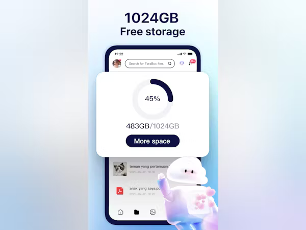

Dropbox vs TeraBox: Cloud Storage Comparison
In today’s digital age, cloud storage has become a necessity, helping us manage everything from family photos and vacation videos to critical work documents. Two major players in this space are Dropbox and TeraBox, each appealing to different types of users. Dropbox, a pioneer in the field, is known for its professional-grade features, seamless synchronization, and robust security. It’s perfect for those who need a polished, dependable system to manage files and collaborate with teams. On the other hand, TeraBox stands out by offering an incredible 1 TB of free storage, making it an attractive option for anyone who simply needs a ton of space without opening their wallet. If your primary focus is free storage, TeraBox seems like a clear winner—but if you prioritize productivity tools and enhanced security, Dropbox may be worth the investment.
However, a quick search for Download TeraBox Mod APK reveals an entirely different conversation. Many users, tempted by the idea of bypassing limitations or accessing premium features without paying, turn to modified APKs. But beware—this approach often comes with significant risks. These modified files can compromise your device’s security, exposing your data to malware and hackers. While the allure of unlocking TeraBox’s premium perks for free might sound appealing, sticking to the official app is a far safer and more ethical option. Ultimately, whether you choose Dropbox or TeraBox, making smart, secure choices will help you get the most out of your cloud storage experience.
Overview of Dropbox and TeraBox
Dropbox is a veteran in the cloud storage arena, launched in 2007 by MIT students Drew Houston and Arash Ferdowsi. It has grown into a robust platform with over 700 million users worldwide, offering seamless file synchronization, sharing capabilities, and a suite of productivity tools.
On the other hand, TeraBox, while newer, has made a name for itself by providing a generous amount of free storage space—up to 1 TB—making it an attractive option for users who need lots of space without spending a dime.
Download Terabox Mod Apk to unlock all premium features for free, including unlimited storage, ad-free usage, and enhanced data security. Enjoy seamless file uploads, lightning-fast downloads, and exclusive tools to manage your files effortlessly—all without spending a dime!
Storage Space
Dropbox
- Free Plan: 2 GB
- Paid Plans: Start at $11.99/month for 2 TB (2,000 GB) with Dropbox Plus.
- Features: Offers advanced file recovery options and version history.
TeraBox
- Free Plan: 1 TB (1,000 GB)
- Paid Plans: More affordable options available for additional storage.
- Features: Focuses on providing ample free space with fewer advanced features compared to Dropbox.
If you’re someone who hoards files like a squirrel collects nuts for winter, TeraBox could be your new best friend. But if you’re after a more polished experience with additional features, Dropbox may be worth the investment.
User Interface and Experience
Dropbox
Dropbox boasts a clean and intuitive interface that’s easy to navigate. Users can drag and drop files into their designated folders, which sync automatically across devices. The mobile app is equally user-friendly, allowing you to access files on the go. However, some users have reported occasional glitches during updates—like trying to find your car keys in a messy room!
TeraBox
TeraBox also offers a straightforward interface but may not be as refined as Dropbox’s. It’s designed to help users quickly upload and manage files without much hassle. However, some users have noted that the app can feel less responsive at times compared to its more established counterpart.
Security Features
Dropbox
Security is one of Dropbox's strong points. It employs advanced encryption methods to protect your data both in transit and at rest. Additionally, it allows users to recover deleted files within 30 days (or up to one year for Plus users), giving peace of mind if you accidentally hit "delete" instead of "download."
TeraBox
TeraBox also prioritizes security but may not offer the same level of assurance as Dropbox. While it provides encryption for data transfer, its overall security features are less comprehensive than those found in Dropbox. Users who handle sensitive information might want to consider this aspect carefully.
Collaboration Tools
Dropbox
Dropbox shines when it comes to collaboration features. It includes tools like Dropbox Paper for document editing and commenting directly on shared files. This makes it easy for teams to work together seamlessly without switching between multiple applications.
TeraBox
TeraBox lacks advanced collaboration tools compared to Dropbox. While you can share files easily, the absence of integrated editing or commenting features may hinder teamwork efficiency.
Pricing Comparison
| Feature | Dropbox | TeraBox |
|---|---|---|
| Free Storage | 2 GB | 1 TB |
| Paid Plans | Starts at $11.99/month (2 TB) | More affordable options available |
| Collaboration Tools | Yes | Limited |
| Security | Advanced | Basic |
Conclusion
If your primary need is lots of free storage, TeraBox is your go-to option—just remember that with great space comes great responsibility (and possibly some ads). If you're leaning towards extra safety, productivity features, and seamless collaboration capabilities, then Dropbox is likely your best bet.
In the end, both services have their unique strengths and weaknesses. Your choice will depend on what you value more: ample free space or enhanced productivity features. Either way, you'll be storing your files in the cloud like a pro!